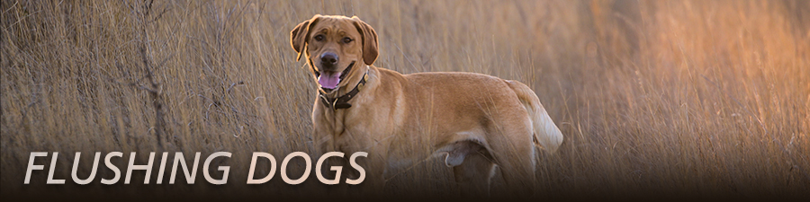

Bird Dog Breeds
Without Bird Dogs, Would We Hunt At All?
For serious upland bird hunters, the idea of hunting pheasants (or any other gamebird for that matter) without a bird dog is a path to frustration, futility and no fun.
Bird Finders:
A dog is essential for finding birds and helping you get them in the air.
Conservation Tools:
Dogs help you locate downed birds and track down winged birds. Many bird dogs will even retrieve your trophy to hand.
Hunting Partners:
The bond between hunter and bird dog is both ancient and magical.
Are you looking for your next bird dog or your first? Our profiles get you started on learning more about 38 proven breeds for upland hunting.
Flushing Dogs
Flushing dogs work cover close to the hunter - within shotgun range - and work to put birds into the air for a shot. It's up to hunter to know his or her dog and when it is “birdy,” and be ready. Many flushing dogs are also natural retrievers, and it can be as easy to train the dog to bring birds back as it is to teach the dog to stay close while scouring cover.
Pointing Dogs

Pointing dogs generally cruise a little or a lot out of shotgun range of the hunter. When a bird is found, the dog "locks up" and points it; the hunter walks in for the flush. Some hunters keep their pointer within shotgun range in case of errant flushes from spooky birds.